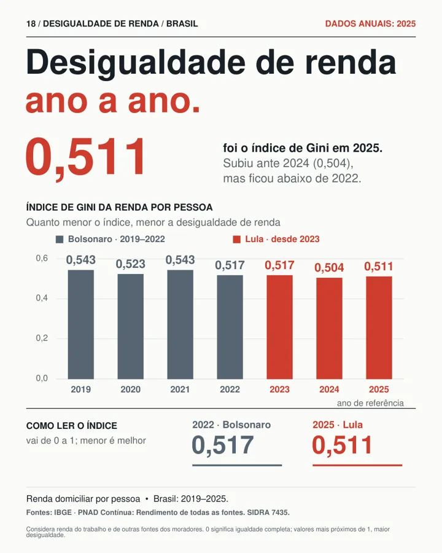

18 Desigualdade de renda · Brasil · Dados anuais: 2025
Desigualdade de renda ano a ano.
0,511
foi o índice de Gini em 2025. Subiu ante 2024 (0,504), mas ficou abaixo de 2022.
Índice de Gini · vai de 0 a 1; menor é melhor
2022 · Bolsonaro0,517
2025 · Lula0,511
Leia com cuidado. Considera renda do trabalho e de outras fontes dos moradores. 0 significa igualdade completa; valores mais próximos de 1, maior desigualdade. Diferenças não isolam o efeito de cada governo.


- Fonte
- IBGE · PNAD Contínua: Rendimento de todas as fontes. SIDRA 7435.
- Período
- Renda domiciliar por pessoa · Brasil: 2019–2025.
- Definição e ressalva
- Considera renda do trabalho e de outras fontes dos moradores. 0 significa igualdade completa; valores mais próximos de 1, maior desigualdade. Diferenças não isolam o efeito de cada governo.
- Como citar
- Conjuntura Crítica (NEC/UFBA). Desigualdade de renda ano a ano. Card 18, dados anuais: 2025. Fonte primária: IBGE · PNAD Contínua: Rendimento de todas as fontes. SIDRA 7435.